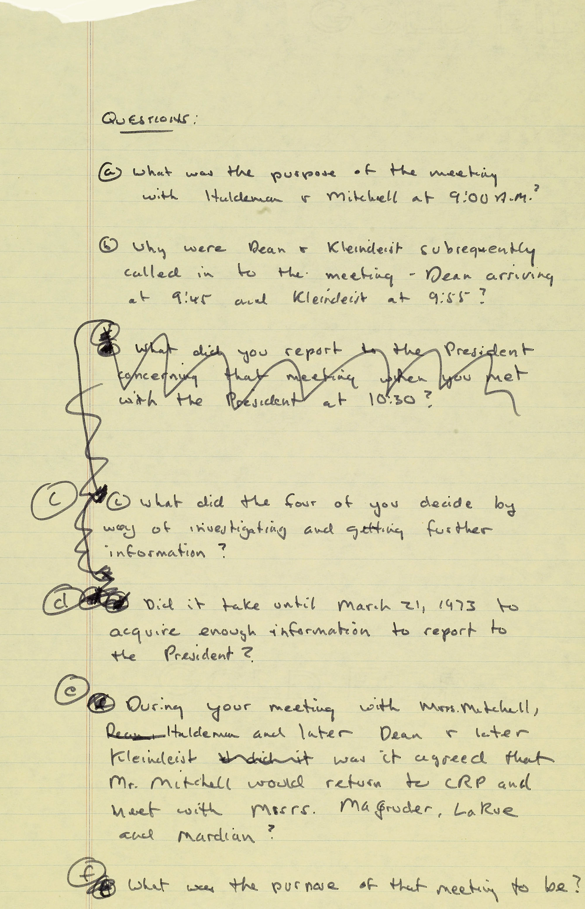
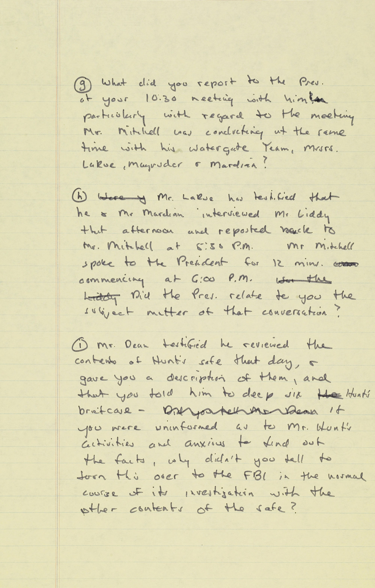

Documents
Watergate Handwritten Notes
Senator Weicker’s Handwritten Questions for J. Ehrlichman – Watergate Hearings
July 24, 1973
Handwritten questions from Senator Weicker for J. Ehrlichman interview during the Watergate hearings. Questions prepared by Weicker and counsel H. William Shure. Select Committee interviews Ehrlichman July 24-30, 1973.
Questions read as follows:
- What was the purpose of the meeting with Haldeman and Mitchell at 9:00 AM?
- Why were Dean and Kleindeinst subsequently called in to the meeting - Dean arriving at 9:45 and Kleindeinst at 9:55?
- Crossed out: What did you report to the President concerning that meeting when you met with the President at 10:30? -
- What did the four of you decide by way of investigating and getting further information?
- Did it take until March 21, 1973 to acquire enough information to report to the President?
- During your meeting with Mrs. Mitchell, Haldeman, and later Dean and later Kleindeinst, was it agreed that Mr. Mitchell would return to CRP and meet with Msrs. Magruder, LaRue, and Mardian?
- What was the purpose of that meeting to be?
- What did you report to the Pres. (president) at your 10:30 meeting with him, particularly with regard to the meeting Mr. Mitchell was conducting at the same time with his Watergate team, Mrs. LaRue, Magruder, and Mardian?
- Mr. LaRue has testified that he and Mr. Maridian interviewed Mr. Liddy that afternoon and reposted back to Mr. Mitchell at 5:30 P.M. Mr. Mitchell spoke to the President for 12 minutes commending at 6:00 P.M. Did the Pres. relate to you the subject matter of that conversation?
- Mr. Dean testified he reviewed the contents of Hunt's safe that day and gave you a description of them, and that you told him to deep six Hunt's briefcase - if you were uninformed as to Mr. Hunt's activities and anxious to find out the fact, why didn't you tell to turn this over to the FBI in the normal course of its investigation with the other contents of the safe?”
SOURCE: Watergate Box 8.

